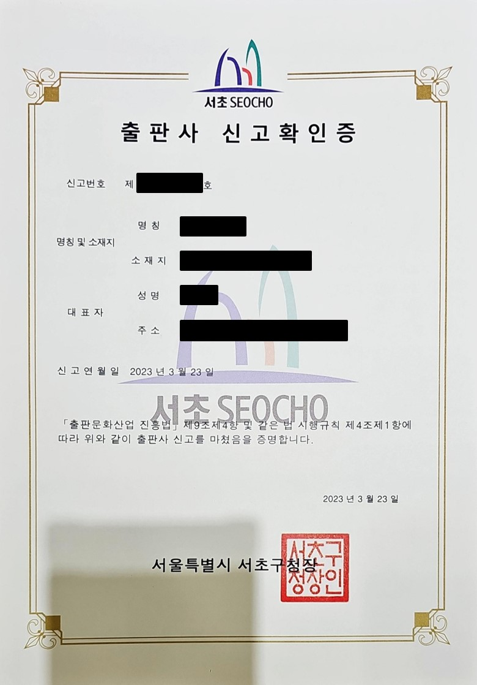
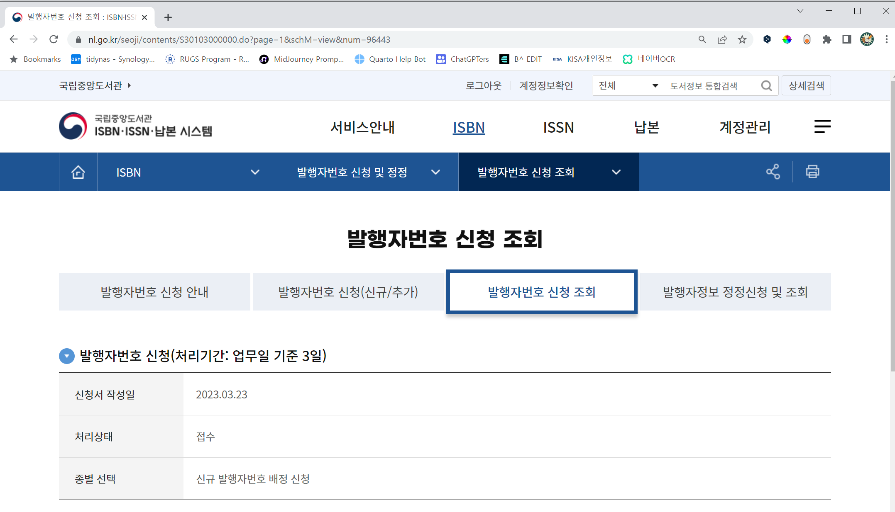

5 출판
대한민국에서 자가출판을 하는 방식은 크게 두가지로 나눠진다. 교보문고의 POD(Publish on Demand) 주문형 출판과 같은 자가출판 서비스를 이용하면 전자책이나 POD를 만드는 과정이 간단해서 쿼토, 워드나 한글 등의 저작도구로 만든 원고를 PDF로 변환하여 올리면 된다. 또한 독립출판이라는 방식도 있는데, 이는 개인이 직접 책을 만들고 출판하는 방식입니다. 저자가 글을 쓰고, 원고편집부터 디자인, 인쇄제작, 출판까지 전 과정을 진행하게 됩니다. 어떤 방식으로 자가출판을 하실지 결정하기 전에 시장 조사를 해보시는 것도 좋습니다
독립출판은 1인 출판 형태로 1인 출판사를 차리고 사업자등록을 하여 혼자서 직접하는 셀프출판이며, 출판 주체는 독립(인디) 작가입니다. 일반 출판사에서는 저자비용이 들어가지 않고 출판사 비용으로 제작하고 작가에게 인세를 지급하는 방식입니다. 반면 독립출판의 경우 원고 작성 외에도 디자인과 마케팅 등 다양한 부분에서 능력을 발휘해야만 한다.
6 법인 출판사 신청
개인이 아닌 법인으로 출판사를 설립하거나 법인 업종에 “출판업”을 추가하는 경우 목적은 출판사 신고확인증을 발급받는 것이다. 책을 출판하는 경우 먼저 관할 지자체에 신고를 준비해야 한다. 이를 위해서 “출판사(신고서, 변경신고서)”를 작성하고 다음 서류를 준비하여 관할 지자체(구시군청)를 내방하여 제출한다. 출판사 신고서는 출판문화산업 진흥법 시행규칙에 별지 서식으로 다운로드 가능하다.
- 임대차 계약서
- 법인등기부등본
- 법인인감증명서
- 법인인감
- 법인대표 신분증
출판사 등록제출서류 제출 후 3일 내 처리하는 것이 원칙이고 출판등록신고증은 등기(서류제출 시 수령주소 명시)로도 수령이 가능하다. 출판등록신고증이 완료되면 세무서를 사업자등록증에 이를 업종에 반영하여 마무리한다.

7 ISBN 발급
국립중앙도서관에서 책을 출판하는 경우 “ISBN” 번호를 출판사가 부여받아야 한다. 이를 위해서 국립중앙도서관 ISBN ISSN 납본시스템에 접속하여 안내에 맞춰 후속 절차를 진행한다. 먼저 국립중앙도서관 ISBN ISSN 납본시스템 상단 계정등록 작업을 수행하여 앞서 발급받은 출판사 신고확인증을 증빙으로 계정등록을 한다.
7.1 발행자번호 신청
발행자번호 신청을 통해 출판사 신고확인증에 기재된 출판사명과 대응되는 ISBN 발행자번호를 부여받는 작업을 수행한다. 처리기간은 업무일 기준 3일이 소요된다.

7.2 ISBN 번호 신청
출판사 발행자번호가 발급되면 출판할 책의 ISBN 번호를 부여할 수 있다.
8 인쇄
출판사가 출판할 책이 정해지면 다음 단계로 수익창출을 위해 인쇄소와 계약을 하여 종이형태 책을 500권, 1,000권 등 수요 구독자를 감안하여 인쇄소에서 출판한다.
9 판매
다양한 출판채널을 통해 독자를 만나고 책을 판매하여 수익을 출판사와 저자, 그리고 서점과 분배한다.